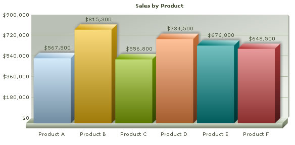
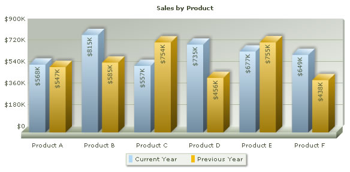

Using FusionCharts with ASP.NET 2.0 (C#.NET) > Charting Data from an Array |
In this section, we'll show you how to use FusionCharts and C# (ASP.NET) to plot charts from data contained in ASP.NET arrays. We'll cover the following examples here:
Before you go further with this page, we recommend you to please see the previous section "Basic Examples" as we start off from concepts explained in that page. The code examples contained in this page are present in Download Package > Code > C# > ArrayExample folder. To view the solution you need to create a blank solution using your ASP.NET editor, copy or import all files to the solution and run it from there. |
| Creating a single series chart from data contained in arrays |
| The code to create a single series chart is contained in SingleSeries.aspx and can be listed as under: |
<%@ Page Language="C#" AutoEventWireup="false" CodeFile="SingleSeries.aspx.cs" Inherits="ArrayExample_SingleSeries" %> |
In the above code, we first include FusionCharts.js file to enable us embed the chart using JavaScript. We then call method GetProductSalesChartHtml from the code behind to generate code for chart. And, the function GetProductSalesChartHtml() in code behind file SingleSeries.aspx.cs can be listed as under: |
public string GetProductSalesChartHtml() //Let's store the sales data for 6 products in our array). We also store //Now, we need to convert this data into XML. We convert using StringBuilder concatenation. //Create the chart - Column 3D Chart with data contained in xmlData |
In this method, we define an array arrData to store sales data for 6 different products. The array has two columns - first one for data label and the next one for data values. We define a variable xmlData to store the entire XML data. To build the XML, we iterate through the array and using string concatenation. Finally, we render the chart using InfoSoftGlobal.FusionCharts.RenderChart() function and pass xmlData as dataXML. When you view the chart, you'll see a chart as under: |
|  |
| Creating a multi-series chart from data contained in arrays |
| Let us now create a multi-series chart from data contained in arrays. We create a file MultiSeries.aspx with the following code: |
<%@ Page Language="C#" AutoEventWireup="false" CodeFile="MultiSeries.aspx.cs" Inherits="MultiSeries" %>
|
Again, we first include FusionCharts.js file to enable us embed the chart using JavaScript. After that, we call GetProductSalesChartHtml() method from the code behind to return HTML code for the chart. The GetProductSalesChartHtml() method in code behind page can be listed as under: |
public string GetProductSalesChartHtml() //Let//s store the sales data for 6 products in our array. We also store //Now, we need to convert this data into multi-series XML. //Initialize <chart> element //Initialize <categories> element - necessary to generate a multi-series chart //Initiate <dataset> elements //Iterate through the data //Close <categories> element //Close <dataset> elements //Assemble the entire XML now //Create the chart - MS Column 3D Chart with data contained in xmlData
|
In this method, we define an array arrData to store sales data for 6 different products. The array has three columns -
first one for data label (product) and the next two for data values. The first
data value column would store sales information We define a variable xmlData to store the entire XML data. We also define categories, currentYear, previousYear variables to store XML data for categories elements, current year's dataset and previous year's dataset respectively. To build the XML, we iterate through the array and using string concatenation. We concatenate the entire XML finally in xmlData. Finally, we render the chart using FusionCharts.RenderChart() function and pass xmlData as dataXML. When you view the chart, you'll see a chart as under: |
|  |
| In Download Package > Code > C# > ArrayExample, we've more example codes to create Stacked and Combination Charts too, which have not been explained here, as they're similar in concept. You can directly see the code if you want to. |